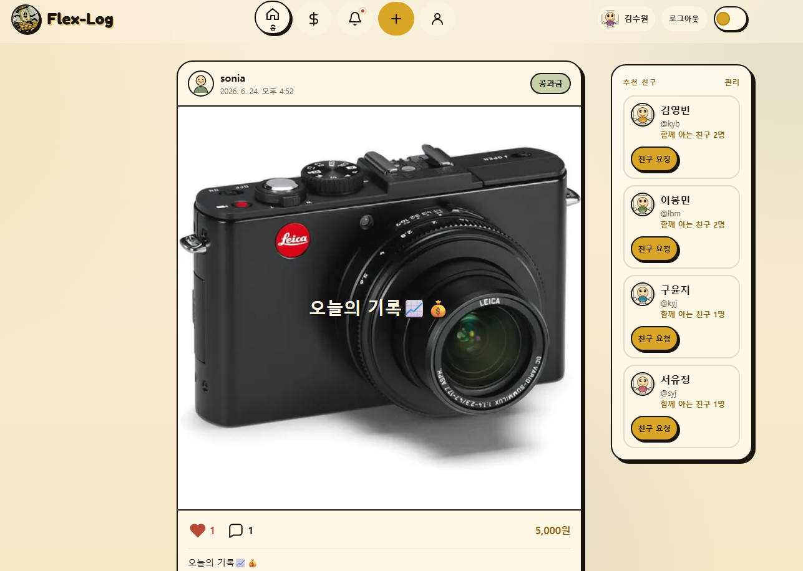
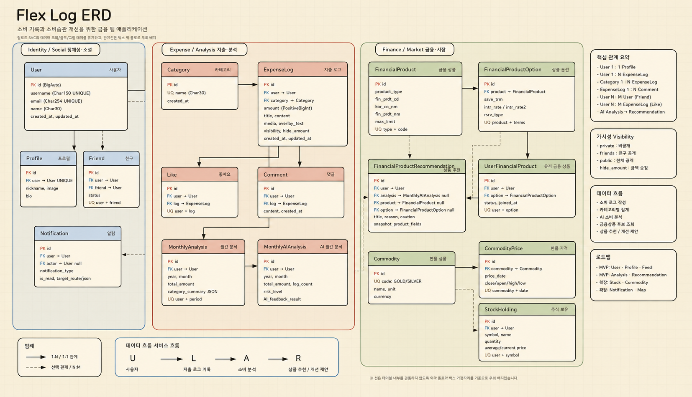
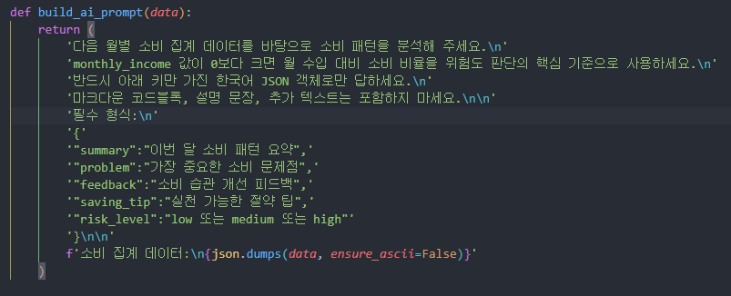
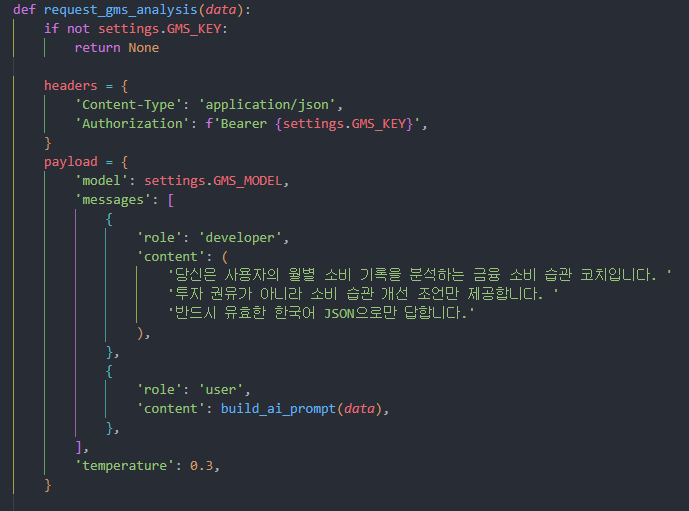
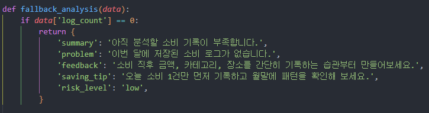
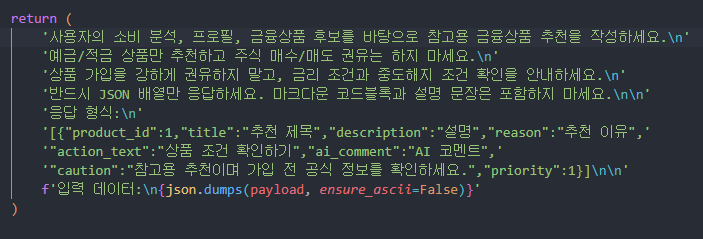
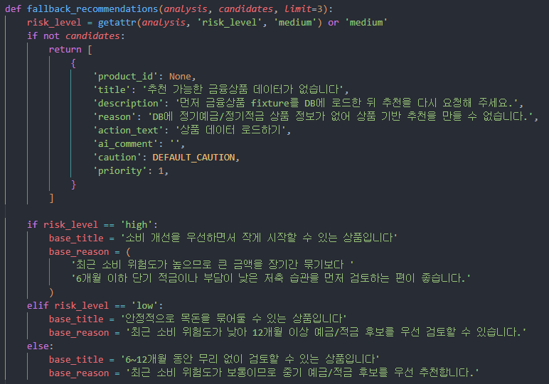

SNS, 배달, 쇼핑, 구독 노출이 잦습니다.
Finance SNS
Flex-Log
소비를 SNS처럼 기록하고, 누적된 데이터를 AI 소비 분석과 금융상품 추천으로 연결하는 금융 웹 애플리케이션
소비 기록
친구 피드
AI 분석
예적금 추천
김종무 / 학번: 1555744
이봉민 / 학번: 1554165
발표 흐름
프로젝트 배경
문제 정의와 방향성
핵심 기능
서비스 흐름
데이터 설계
AI 분석과 추천
협업 방식
트러블슈팅과 배운 점
소비를 줄이고 싶지만 기록은 어려운 사용자
20대 사회초년생, 소비 개선 니즈가 큼
소비는 자주 하지만 한 달 소비 규모와 반복 지출을 잘 파악하지 못합니다.
가계부는 딱딱해 지속 기록이 어렵습니다.
내 소비 패턴을 쉽게 알고 싶습니다.
피드 경험으로 기록 진입장벽을 낮춥니다.
문제의 핵심은 소비보다 인식과 기록 습관입니다
따라서 Flex-Log는 소비 기록을 재미있게 만들고, 그 데이터를 분석과 추천으로 연결해 개선 방향을 제시합니다.
기록이 쌓이면 분석과 추천이 다시 기록을 돕습니다
소비 습관
개선 루프
개선 루프
소비 기록
→
피드 공유
→
데이터 누적
→
AI 분석
→
맞춤 추천
→
소비 개선
→
서비스 방향성
- 1이미지와 글을 활용해 소비 기록의 진입 장벽을 낮춥니다.
- 2피드 공유와 친구 반응으로 기록 경험을 가볍게 유지합니다.
- 3누적된 소비 로그를 AI 분석과 금융상품 추천의 근거로 사용합니다.
핵심 기능은 기록, 공유, 분석, 추천으로 연결됩니다
소비 로그
- 이미지와 텍스트 기반 소비 기록
- 금액, 카테고리, 공개 범위 저장
- 작성, 조회, 수정, 삭제 지원
SNS 피드
- 친구 관계 기반 피드 조회
- 좋아요와 댓글로 가벼운 반응
- 24시간 피드 노출 정책 적용
금융 인사이트
- 월별 소비와 카테고리 분석
- AI 소비 위험도와 개선 피드백
- 소비 분석 기반 예적금 추천
소비 기록은 피드 경험으로 시작됩니다
기록 경험
소비를 숫자만 입력하는 일이 아니라 사진과 문장으로 남기는 행동으로 바꿉니다.
공유 경험
친구 피드에서 소비 로그를 확인하고, 좋아요와 댓글로 자연스럽게 반응합니다.
데이터 활용
피드에 쌓인 로그는 월별 분석과 금융상품 추천의 입력 데이터가 됩니다.

시연은 하나의 소비 로그가 추천으로 이어지는 흐름입니다
회원가입 / 로그인계정 생성 후 인증이 필요한 주요 화면으로 이동합니다.
소비 로그 작성이미지, 금액, 카테고리, 내용을 입력해 소비를 기록합니다.
친구 피드 확인친구 관계인 사용자들의 소비 로그를 피드에서 확인합니다.
월별 AI 분석총액, 평균, 카테고리별 소비와 위험도 피드백을 확인합니다.
금융상품 추천분석 결과와 상품 DB를 기반으로 추천 이유를 확인합니다.
핵심 시연 포인트
소비 로그 작성
피드 공유와 반응
월별 AI 분석
금융상품 추천
마이페이지에서 기록 확인
데이터는 소비 기록에서 분석과 추천으로 이어집니다
핵심은 ExpenseLog를 삭제하지 않고 분석 가능한 데이터로 유지하는 것입니다.
피드 노출은 `is_visible`, `visibility`, `expires_at` 조건으로 제어하고, DB에는 소비 분석과 추천에 필요한 원천 로그를 보존합니다.

소비 분석 프롬프트는 월별 데이터를 구조화합니다
소비 분석 프롬프트
월별 소비 총액
소비 기록 수
평균 소비 금액
카테고리별 소비 합계
소비 위험도
JSON 응답 형식 강제
월별 지표를 AI에 전달해 JSON 응답을 받습니다.



추천 프롬프트는 분석과 상품 후보를 연결합니다
금융상품 추천 프롬프트
최신 AI 소비 분석 결과
사용자 재무 상태
DB 금융상품 후보
추천 이유
주의 문구
가입 강요 금지
분석 결과와 금융상품 후보를 함께 검토해 추천 이유, 주의 문구, 우선순위를 카드 UI에 맞춰 반환합니다.


구현 속도와 API 연동 안정성을 기준으로 선택했습니다
짧은 기간에 맞춰 브랜치와 문서 흐름을 단순화했습니다
브랜치 전략 기준
SSAFY 멘토 칼럼에서 좋은길벗 멘토님의 Git 형상관리 사례를 참고해 2인 2주 프로젝트에 맞게 단순화했습니다.
- 1master/main은 최종 안정 브랜치로 유지합니다.
- 2project/week 브랜치에서 주차별 통합 테스트를 진행합니다.
- 3feature, docs, fix 브랜치로 개인 작업 영역을 분리합니다.
운영 방식
최종 안정 버전검증된 project/week 브랜치만 병합하고 직접 push를 제한했습니다.
주차별 통합 브랜치1주차와 2주차 작업을 분리해 충돌과 불안정 코드 전파를 줄였습니다.
기능과 문서 작업 분리PR 기반 리뷰를 거치고, 코드뿐 아니라 ERD/API/WBS 문서도 Git으로 관리했습니다.
트러블슈팅의 기준은 데이터 유지와 시연 안정성이었습니다
24시간 피드
처음에는 만료 후 삭제를 고려했지만 분석 데이터가 사라지는 문제가 있었습니다.
해결: DB에는 유지하고 피드 노출만 조건으로 제어했습니다.
AI / 외부 API 실패
API 키, 네트워크, 응답 형식 오류로 시연 중 실패할 가능성이 있었습니다.
해결: 규칙 기반 fallback으로 최소 흐름을 보장했습니다.
기능 범위 조절
소비 기록, SNS, 분석, 금융 기능이 함께 있어 우선순위 조절이 필요했습니다.
해결: 기록 → 분석 → 추천 흐름에 직접 연결되는 기능부터 구현했습니다.
데이터 흐름을 먼저 설계해야 기능이 자연스럽게 연결됩니다
개발 과정에서 얻은 것
- 1요구사항을 ERD와 API 명세로 구체화하는 과정
- 2Django REST Framework와 Vue 화면을 연결하는 구조
- 3외부 API 실패 가능성을 고려한 예외 처리와 fallback
- 4사용자 경험과 분석 데이터 보존 사이의 균형
개선 방향
추천의 정확도를 높이려면 소비 데이터 품질과 사용자 입력 정보가 함께 개선되어야 합니다.
예산 설정, 고정비와 변동비 분리, OCR 영수증 인식, 추천 결과 피드백 반영, 실제 금융상품 비교 UX 고도화를 다음 단계로 생각했습니다.
Flex-Log는 소비를 과시하는 서비스가 아니라, 기록을 자산으로 바꾸는 서비스입니다.